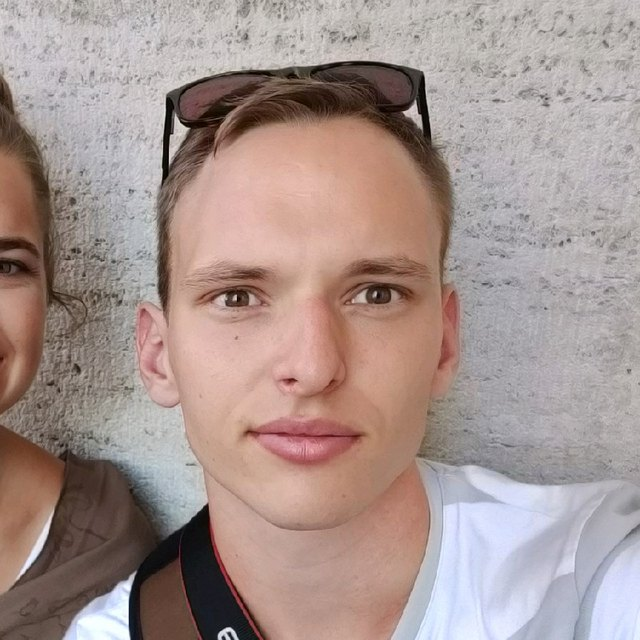

Curriculum vitae
AI Engineer · Colourbox
AI engineer working on machine learning systems for commercial search, hosted on European infrastructure. PhD in multi-robot systems from the University of Southern Denmark, with a research stay at Carnegie Mellon's Robotics Institute.

Building the machine learning systems behind Colourbox's commercial search products, hosted end to end on European infrastructure and kept within EU data residency.
Search that understands the actual content of images, video, audio and documents — moving beyond keywords toward genuine semantic and multimodal understanding. The models powering it run on self-hosted, EU-based infrastructure, so customer data and AI processing never leave European jurisdiction. Favouring sovereign, right-sized architecture over unnecessary complexity or reliance on non-EU providers.
In-house machine learning models and pipelines for real estate image processing at production scale — classification, segmentation, object detection and generative models running on GPU clusters under real SLAs, across thousands of orders a day.
PhD on human–multi-robot interaction as part of the HERD project — Human-AI Collaboration: Engaging and Controlling Swarms of Robots and Drones — funded by Innovation Fund Denmark.
Researched how a single operator can engage with and control swarms of autonomous robots and drones in unstructured, outdoor environments, with real-world use cases alongside industry partners in agriculture and search & rescue. Contributed decentralized trajectory task allocation, coverage path planning, single-console swarm control, and UAV-to-UAV communication, all validated in outdoor field trials. Position granted out of 42 applicants. Six peer-reviewed publications; two M.Sc. theses supervised.
Research stay in Pittsburgh, Pennsylvania, during the PhD.
A self-learning pricing platform used by fuel, EV-charging and convenience-retail sites internationally. Worked across machine learning and operations to keep a real-time, data-driven AI product running reliably in production, supporting the models that forecast customer behaviour and optimize pricing in dynamic markets — early grounding in taking AI from prototype to dependable, large-scale operation.
Alongside the B.Sc. and M.Sc. programmes. Linux system administration and Git.
Cooperative Control of Multirobot Systems in Real-World Applications. Defended 2025. Supervisors: Anders Lyhne Christensen, Ulrik Pagh Schultz Lundquist.
Multi-Agent Decentralised Coordination using CNRL for Industrial Applications.
Semantic Segmentation using a Deep Neural Network for Pose Estimation of a Rigid Object.